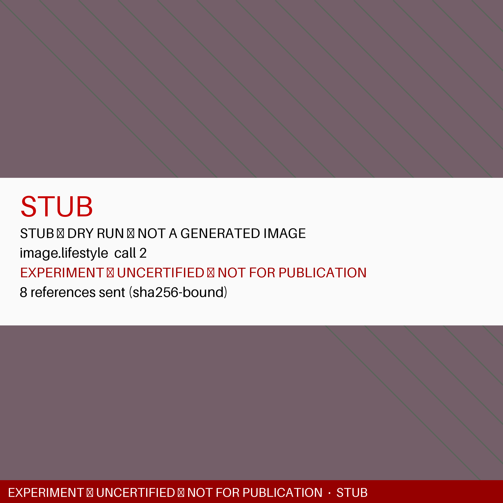
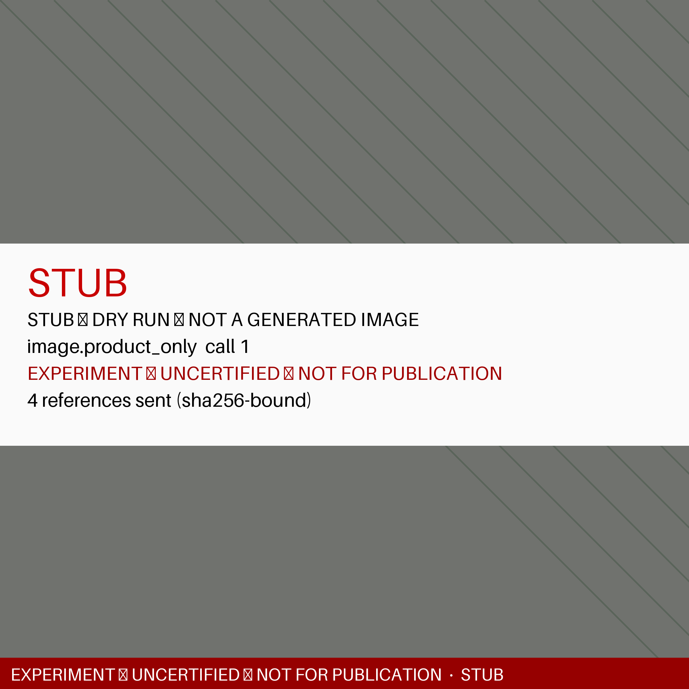
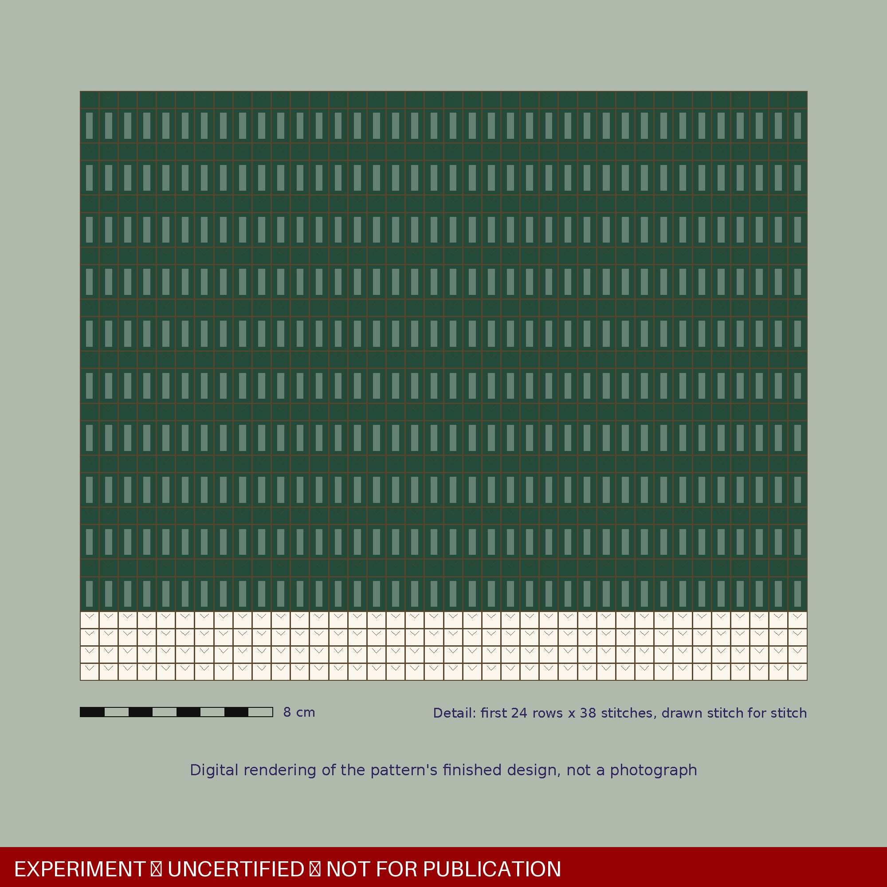
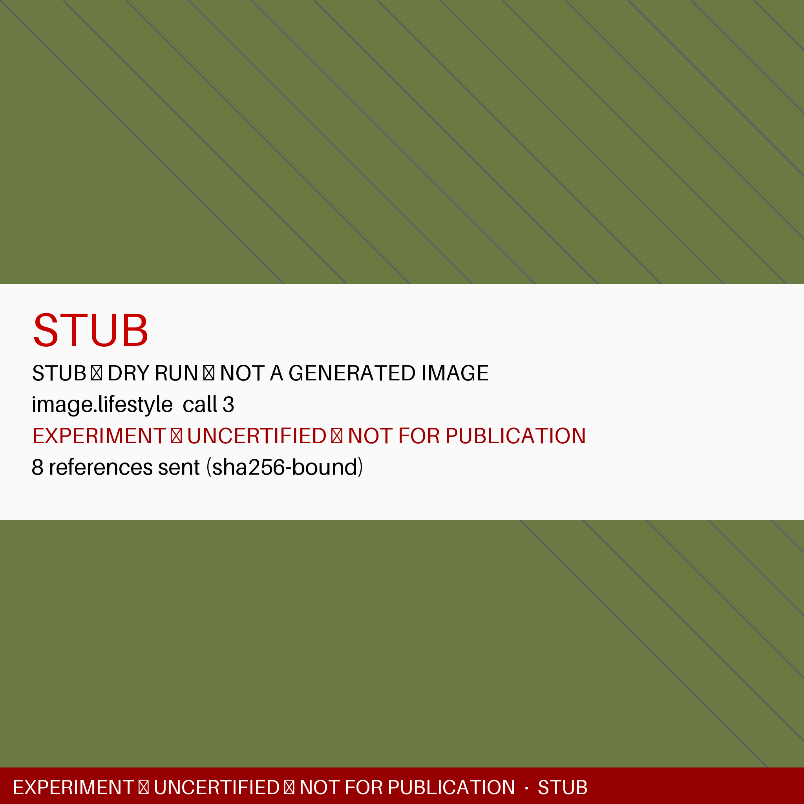
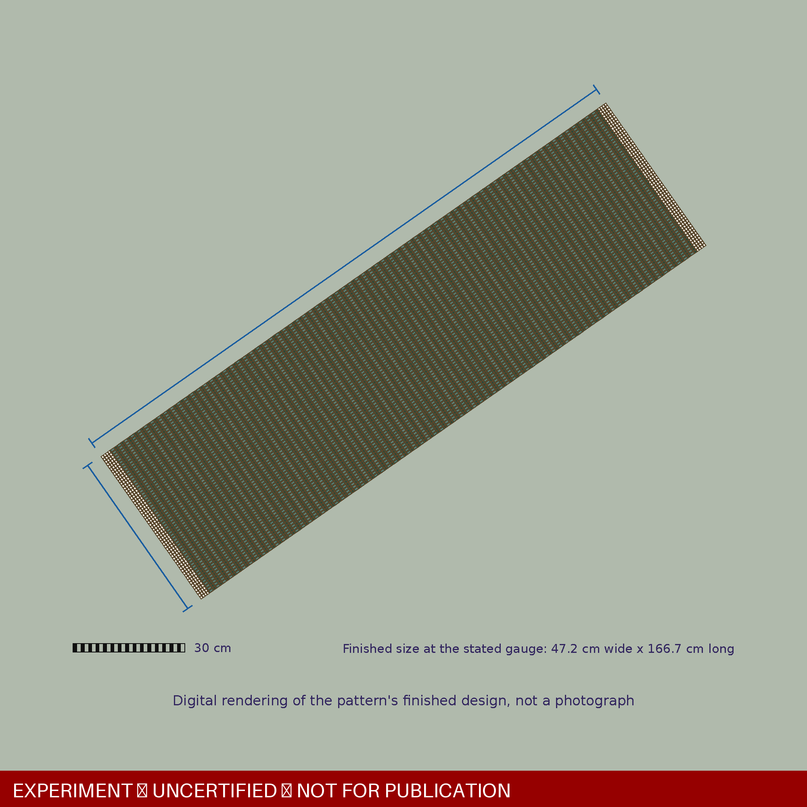
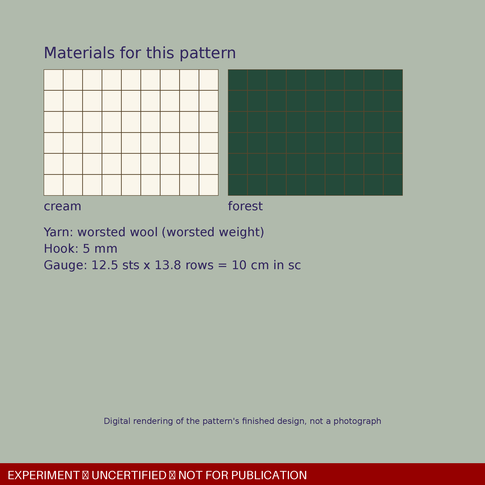
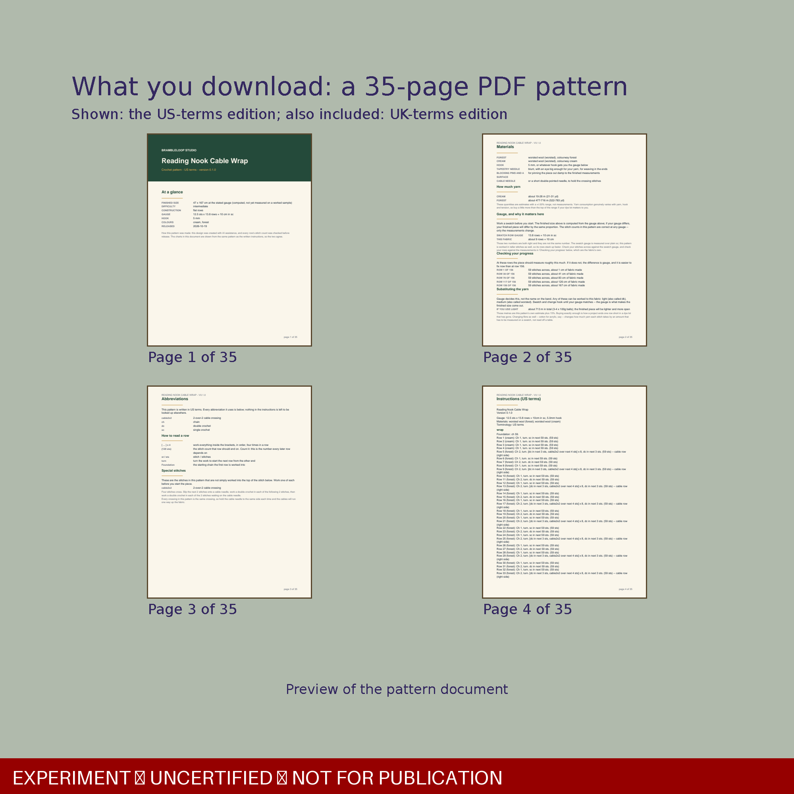

Reading Nook Cable Wrap v0.1.0 — experiment approval package
Run state: ready_for_owner_review · run key imgprod:reading-nook-cable-wrap@0.1.0@335c61ce56587a46cf60db33b3aeb6dbdab0d5404b4c4ab4e7a7453571753a24 · mode dry-run · generated 2026-10-19T22:29:00+00:00
Three separate decisions
1. Visual approval (yours)
Only whether these images look right. It approves nothing else, and it is not a technical check.
2. Technical certification
REFUSED by gate.certify
ERROR UNCALIBRATED_PRIMITIVE: ['cable2x2'] are new primitives no sample has calibrated: their height and yarn behaviour decide this pattern's size and yardage claims, so it is not released for unrestricted use until a physical test of it passes
Content hash 335c61ce56587a46cf60db33b3aeb6dbdab0d5404b4c4ab4e7a7453571753a24
3. Publication authorization
NOT AVAILABLE
An experiment can never reach store.publish, image export or listing approval (refusals proven below).
Gallery, in order


status: PASS
alt: AI-generated image: a model wearing the Reading Nook Cable Wrap made from this crochet pattern (digital pattern, not a finished item)


status: PASS
alt: AI-generated image: the Reading Nook Cable Wrap laid flat, showing the cable columns and cream end bands (digital pattern)


status: DETERMINISTIC (renderer contract; content uncertified)
alt: Computer render of the Reading Nook Cable Wrap's cable stitch texture, drawn from the pattern's stitch counts


status: PASS
alt: AI-generated image: back view of a model wearing the Reading Nook Cable Wrap, showing the drape (digital pattern, not a finished item)


status: DETERMINISTIC (renderer contract; content uncertified)
alt: Computer render of the Reading Nook Cable Wrap with its computed finished size


status: DETERMINISTIC (renderer contract; content uncertified)
alt: Materials and construction of the Reading Nook Cable Wrap crochet pattern


status: DETERMINISTIC (renderer contract; content uncertified)
alt: What you download: the Reading Nook Cable Wrap crochet pattern PDFs in US and UK terms
The listing as a customer would read it
EXPERIMENT — UNCERTIFIED — NOT FOR PUBLICATION — draft only, not listed anywhere
Reading Nook Cable Wrap | Crochet Pattern PDF | winter | US and UK Terms
CA$7.0 · DIGITAL PATTERN (instant download) — not a finished item
Reading Nook Cable Wrap — a crochet pattern, not a finished item. You receive an instant digital download. Why it is worth making: worked in 2 colours, written for a intermediate maker, every row written out and charted, so you can follow whichever you prefer.
WHAT YOU GET
- Written instructions for every row, with a stitch count on each
- A chart drawn from the same pattern as the written instructions, so the two always agree
- Two PDFs, one in US terms and one in UK terms — the same pattern, each written throughout in its own terminology, with a stitch key to match
THE DETAILS
- Finished size: 47 x 167 cm (computed from the stitch counts at the stated gauge; no sample has been made or measured), worked at the gauge below
- Difficulty: intermediate
- Yarn: worsted wool
- Fibre: as named above; the pattern does not specify a composition, so choose any yarn of the same weight that meets the gauge
- Gauge: 12.5 sts x 13.8 rows = 10 cm in sc, 5 mm hook
- Stitches used: cable2x2, dc, sc
- Colours: 2 (cream, forest)
- cream: about 19-28 m
- forest: about 477-716 m
- Yarn quantities are estimates with a +/-20% range, not measurements. Yarn use varies with yarn, hook and tension.
MAKING IT IN TIME FOR WINTER
Start early. A large piece takes real hours, and the whole point of buying the pattern now is having the weeks to make it.
HOW THIS PATTERN WAS MADE
This design was created with AI assistance, and every row's stitch count is checked before release. If anything in it does not add up, tell us: we correct the pattern itself and send you the corrected file.
PATTERN USE AND SUPPORT
- for the buyer's own use, and to teach from in a class where each participant has their own copy
- finished items may be sold by individual makers and small businesses, not manufactured at scale
- the pattern file, its charts and its images may not be shared, resold, uploaded or included in another publication
- questions are answered through the shop the pattern was bought from, against the exact version that was bought
- corrections are free: a corrected pattern replaces the old file, and anyone who bought an earlier version can ask for the corrected one at any time
These are the terms Brambleloop offers; they have not yet been through legal review.
- DIGITAL PATTERN — this listing is a downloadable crochet pattern (PDF), not a finished wrap. No physical item is shipped.
- Instant download: two PDFs, the same pattern written in US terms and in UK terms.
- AI-imagery disclosure: the photographs of Laura and the flat lay are AI-generated images (FLUX 3) of the pattern's computed design, not photographs of a made sample. Laura is an AI-generated model. The detail, size, materials and contents frames are computer renders drawn from the pattern's stitch counts.
- Finished size and yardage are computed from the stitch counts at the stated gauge. No sample has been made or measured; yours will depend on your yarn and tension.
- Created with AI assistance; every row's stitch count is checked by software.
- Digital items: no returns or exchanges once downloaded; message the shop with any question about the pattern.
Download: After purchase, open Etsy > You > Purchases and reviews, find this order and click Download Files. You get reading-nook-cable-wrap-US.pdf and reading-nook-cable-wrap-UK.pdf. Open them with any PDF reader; print them or read them on screen.
Tags: winter wrap crochetwrap crochet patterncrochet winter giftwritten and chartcable wrap patternwinter diydigital downloadinstant download pdfyarn craft projectus and uk termsprintable pdf chartfiber art projectcable crochet
Materials: worsted wool, worsted wool
Category: wrap — Etsy taxonomy BLOCKED: no Etsy taxonomy snapshot in the scratch database, and production's taxonomy reading is not readable from here without credentials (read-only access only; nothing was written). The category is UNKNOWN, never guessed
PDFs (uncertified): US terms 4dac9cbb4812 · UK terms c536c2b4429b
Results per gate
| image | check | status | why |
|---|---|---|---|
| product_anchor #1 | binding | PASS | EXPERIMENT — UNCERTIFIED — NOT FOR PUBLICATION: bound to the UNCERTIFIED content 335c61ce5658 and its uncertified US/UK PDF hashes; certification REFUSED: ERROR UNCALIBRATED_PRIMITIVE: ['cable2x2'] are new primitives no sample has calibrated: their height and yarn behaviour decide this pattern's size and yardage claims, so it is not released for unrestricted use until a physical test of it passes |
| product_anchor #1 | product_truth | PASS | STUB judge (dry run): no image was judged; this is plumbing, not a verdict |
| product_anchor #1 | quality | PASS | 2048x2048 PNG, opaque |
| lifestyle #1 | anatomy | PASS | STUB judge (dry run): no image was judged; this is plumbing, not a verdict |
| lifestyle #1 | binding | PASS | EXPERIMENT — UNCERTIFIED — NOT FOR PUBLICATION: bound to the UNCERTIFIED content 335c61ce5658 and its uncertified US/UK PDF hashes; certification REFUSED: ERROR UNCALIBRATED_PRIMITIVE: ['cable2x2'] are new primitives no sample has calibrated: their height and yarn behaviour decide this pattern's size and yardage claims, so it is not released for unrestricted use until a physical test of it passes |
| lifestyle #1 | body_proportions | PASS | STUB judge (dry run): no image was judged; this is plumbing, not a verdict |
| lifestyle #1 | disclosure | PASS | honesty label assigned to the image's alt text and caption |
| lifestyle #1 | identity | PASS | STUB judge (dry run): no image was judged; this is plumbing, not a verdict |
| lifestyle #1 | outfit | PASS | outfit exp-3c19bda128 is reserved for 'reading-nook-cable-wrap'; use recorded |
| lifestyle #1 | outfit_consistency | PASS | STUB judge (dry run): no image was judged; this is plumbing, not a verdict |
| lifestyle #1 | outfit_distinctness | PASS | distinct from every other listing's outfit and from the reference clothing |
| lifestyle #1 | product_truth | PASS | STUB judge (dry run): no image was judged; this is plumbing, not a verdict |
| lifestyle #1 | provenance | PASS | AI-generated (stub/stub (dry run)), never a photograph |
| lifestyle #1 | quality | PASS | 2048x2048 PNG, opaque |
| lifestyle #1 | realism | PASS | STUB judge (dry run): no image was judged; this is plumbing, not a verdict |
| lifestyle #1 | role | PASS | CONVERSION_CREATIVE can do LIFESTYLE |
| angle #1 | anatomy | PASS | STUB judge (dry run): no image was judged; this is plumbing, not a verdict |
| angle #1 | binding | PASS | EXPERIMENT — UNCERTIFIED — NOT FOR PUBLICATION: bound to the UNCERTIFIED content 335c61ce5658 and its uncertified US/UK PDF hashes; certification REFUSED: ERROR UNCALIBRATED_PRIMITIVE: ['cable2x2'] are new primitives no sample has calibrated: their height and yarn behaviour decide this pattern's size and yardage claims, so it is not released for unrestricted use until a physical test of it passes |
| angle #1 | body_proportions | PASS | STUB judge (dry run): no image was judged; this is plumbing, not a verdict |
| angle #1 | disclosure | PASS | honesty label assigned to the image's alt text and caption |
| angle #1 | identity | PASS | STUB judge (dry run): no image was judged; this is plumbing, not a verdict |
| angle #1 | outfit | PASS | outfit exp-3c19bda128 is reserved for 'reading-nook-cable-wrap'; use recorded |
| angle #1 | outfit_consistency | PASS | STUB judge (dry run): no image was judged; this is plumbing, not a verdict |
| angle #1 | outfit_distinctness | PASS | distinct from every other listing's outfit and from the reference clothing |
| angle #1 | product_truth | PASS | STUB judge (dry run): no image was judged; this is plumbing, not a verdict |
| angle #1 | provenance | PASS | AI-generated (stub/stub (dry run)), never a photograph |
| angle #1 | quality | PASS | 2048x2048 PNG, opaque |
| angle #1 | realism | PASS | STUB judge (dry run): no image was judged; this is plumbing, not a verdict |
| angle #1 | role | PASS | CONVERSION_CREATIVE can do ANGLE |
Unknowns and blockers
- none recorded
- EXPERIMENT — UNCERTIFIED — NOT FOR PUBLICATION: the product is uncertified (certification refused); an experiment image is never publishable, exportable or approvable for a listing
- Etsy Listing Image Requirements could not be read (HTTP 403, DataDome) and the help articles conflict on 'use your own photographs' for designed items (VISGATE §3, V1). Whether a generated image may appear on a digital-pattern listing is UNKNOWN
- F-852: a AI_LIFESTYLE_CONCEPT is generated imagery of an object nobody has made, and generated product imagery is refused in every listing role (ANGLE here). A disclaimer is not permission
- F-852: a AI_LIFESTYLE_CONCEPT is generated imagery of an object nobody has made, and generated product imagery is refused in every listing role (LIFESTYLE here). A disclaimer is not permission
- Laura publication gate: these bytes are 'not_for_publication', not publication_approved
- gallery set check: no_hero: no frame in position one, which is the frame most shoppers see and often the only one
Run blocked reason: none
Publication refusals (proven)
- listing approval (image_production.approve): refused: EXPERIMENT — UNCERTIFIED — NOT FOR PUBLICATION: reading-nook-cable-wrap@0.1.0 is an uncertified experiment (release 335c61ce5658); listing approval is refused
- image export (disclosed_listing.export_images): refused: EXPERIMENT — UNCERTIFIED — NOT FOR PUBLICATION: reading-nook-cable-wrap@? is an uncertified experiment (release 335c61ce5658); listing image export is refused
- Etsy payload (etsy_ops.certified_payload): refused: EXPERIMENT — UNCERTIFIED — NOT FOR PUBLICATION: reading-nook-cable-wrap@0.1.0 is an uncertified experiment (release 335c61ce5658); Etsy payload (publish/activation) is refused
- store.publish (handler, through the queue): refused: ExperimentRefused: EXPERIMENT — UNCERTIFIED — NOT FOR PUBLICATION: reading-nook-cable-wrap@0.1.0 is an uncertified experiment (release 335c61ce5658); store.publish is refused Traceback (most recent ca
Outfit and scene (automatic)
black fitted long-sleeve top; denim midi skirt; brown leather ankle boots; silver ring — distinct from the canonical reference clothing (ivory top, beige trousers) and the owner's earlier wrap outfit (brown top, cream trousers, tan boots, gold necklace).
Costs and attempts
Hard cap CA$5.00 · spent CA$0.0000 · reserved now CA$0.0000
| role | attempt | tier | output px | format | cost CA$ | live price CA$ | latency s | error |
|---|---|---|---|---|---|---|---|---|
| product_anchor | 1 | 2048x2048 | [2048, 2048] | PNG | 0.0 | 0.13986 | 0.13 | |
| lifestyle | 1 | 2048x2048 | [2048, 2048] | PNG | 0.0 | 0.13986 | 0.15 | |
| angle | 1 | 2048x2048 | [2048, 2048] | PNG | 0.0 | 0.13986 | 0.14 |
Vision calls: 0 · Command Center card: EXPERIMENT — UNCERTIFIED — NOT FOR PUBLICATION: gallery ready for your look: reading-nook-cable-wrap
Execution timeline (owner actions between start and card: none)
| at (UTC) | stage | actor | job | idempotency key | in | out | CA$ | note |
|---|---|---|---|---|---|---|---|---|
| 2026-10-19T22:28:35.508+00:00 | scratch SHADOW database created | harness | | | 891bc5f8ded0 | 0.0 | ||
| 2026-10-19T22:28:36.725+00:00 | certification: gate.certify (real handler, scratch SHADOW DB) | quality_director | 1 | experiment:certify:reading-nook-cable-wrap:0.1.0:23420beed766 | aaaab1c0327a | 061d4ec4f6b7 | 0.0 | REFUSED: ERROR UNCALIBRATED_PRIMITIVE: ['cable2x2'] are new primitives no sample has calibrated: their height and yarn behaviour decide this pattern's size and yardage claims, so it is not released for unrestricted use until a physical test of it passes |
| 2026-10-19T22:28:48.957+00:00 | uncertified PDFs rendered twice each, fixed released_on | harness | | 01b9715fd97d | e0c449b5d9d9 | 0.0 | ||
| 2026-10-19T22:28:48.989+00:00 | experiment opened (bound to content hash + uncertified PDF hashes) | harness | | 857bd7c7ac91 | 379f850ea292 | 0.0 | ||
| 2026-10-19T22:28:50.181+00:00 | orchestrator triggered (experiment) | harness | imgprod:reading-nook-cable-wrap@0.1.0@335c61ce56587a46cf60db33b3aeb6dbdab0d5404b4c4ab4e7a7453571753a24:retrieve_release | | 8cebd8a2e459 | 0.0 | ||
| 2026-10-19T22:28:50.478+00:00 | image_production.retrieve_release | publishing | 2 | imgprod:reading-nook-cable-wrap@0.1.0@335c61ce56587a46cf60db33b3aeb6dbdab0d5404b4c4ab4e7a7453571753a24:retrieve_release | 2472a4d41009 | 6e8fe61cf75d | 0.0 | JobStatus.DONE |
| 2026-10-19T22:28:51.481+00:00 | image_production.prepare_references | publishing | 3 | imgprod:reading-nook-cable-wrap@0.1.0@335c61ce56587a46cf60db33b3aeb6dbdab0d5404b4c4ab4e7a7453571753a24:prepare_references | e73d97e18296 | 1c4cc953ec1c | 0.0 | JobStatus.DONE |
| 2026-10-19T22:28:52.788+00:00 | image_production.product_generation | publishing | 4 | imgprod:reading-nook-cable-wrap@0.1.0@335c61ce56587a46cf60db33b3aeb6dbdab0d5404b4c4ab4e7a7453571753a24:product_generation | d4e4e276b511 | db71848b6936 | 0.0 | JobStatus.DONE |
| 2026-10-19T22:28:52.809+00:00 | image_production.fidelity_gate | publishing | 5 | imgprod:reading-nook-cable-wrap@0.1.0@335c61ce56587a46cf60db33b3aeb6dbdab0d5404b4c4ab4e7a7453571753a24:fidelity_gate | 98fd7ea7310e | 7c68de0339c2 | 0.0 | JobStatus.DONE |
| 2026-10-19T22:28:52.938+00:00 | image_production.load_laura_references | publishing | 6 | imgprod:reading-nook-cable-wrap@0.1.0@335c61ce56587a46cf60db33b3aeb6dbdab0d5404b4c4ab4e7a7453571753a24:load_laura_references | 5f5b690e88b2 | dcda791d482a | 0.0 | JobStatus.DONE |
| 2026-10-19T22:28:53.004+00:00 | image_production.reserve_outfit | publishing | 7 | imgprod:reading-nook-cable-wrap@0.1.0@335c61ce56587a46cf60db33b3aeb6dbdab0d5404b4c4ab4e7a7453571753a24:reserve_outfit | 103d889e9759 | b7dbbbf51414 | 0.0 | JobStatus.DONE |
| 2026-10-19T22:28:54.348+00:00 | image_production.lifestyle_generation | publishing | 8 | imgprod:reading-nook-cable-wrap@0.1.0@335c61ce56587a46cf60db33b3aeb6dbdab0d5404b4c4ab4e7a7453571753a24:lifestyle_generation | 71d4ca79c977 | 56368116cf7a | 0.0 | JobStatus.DONE |
| 2026-10-19T22:28:55.950+00:00 | image_production.remaining_roles | publishing | 9 | imgprod:reading-nook-cable-wrap@0.1.0@335c61ce56587a46cf60db33b3aeb6dbdab0d5404b4c4ab4e7a7453571753a24:remaining_roles | db2cb677c36a | 454d21af605e | 0.0 | JobStatus.DONE |
| 2026-10-19T22:28:55.970+00:00 | image_production.verification | publishing | 10 | imgprod:reading-nook-cable-wrap@0.1.0@335c61ce56587a46cf60db33b3aeb6dbdab0d5404b4c4ab4e7a7453571753a24:verification | 6f16b6d3027f | 2febef086b67 | 0.0 | JobStatus.DONE |
| 2026-10-19T22:28:59.150+00:00 | gallery assembly: deterministic frames rendered and stored | publishing | | | 31b2f00bc803 | 0.0 | ||
| 2026-10-19T22:28:59.167+00:00 | image_production.gallery_assembly | publishing | 11 | imgprod:reading-nook-cable-wrap@0.1.0@335c61ce56587a46cf60db33b3aeb6dbdab0d5404b4c4ab4e7a7453571753a24:gallery_assembly | 3701f516a68e | 0bdb9b9f6748 | 0.0 | JobStatus.DONE |
| 2026-10-19T22:28:59.201+00:00 | image_production.owner_card | publishing | 12 | imgprod:reading-nook-cable-wrap@0.1.0@335c61ce56587a46cf60db33b3aeb6dbdab0d5404b4c4ab4e7a7453571753a24:owner_card | f104e5fe0ea4 | cb52e434b2dd | 0.0 | JobStatus.DONE |
| 2026-10-19T22:28:59.226+00:00 | orchestrator idle after 11 stage jobs | harness | | | c1c7abf97c3f | 0.0 | ||
| 2026-10-19T22:28:59.374+00:00 | listing draft (seo/search/pricing/category reused) | seo | | | bab7d0ee1bbe | 0.0 | ||
| 2026-10-19T22:28:59.552+00:00 | approval card created (Command Center notifications.refresh) | command_center | | | 66a6406584e1 | 0.0 | EXPERIMENT — UNCERTIFIED — NOT FOR PUBLICATION: gallery ready for your look: reading-nook-cable-wrap | |
| 2026-10-19T22:28:59.616+00:00 | publication paths refused (store.publish, export, listing approval) | harness | | | e7b7555d2d83 | 0.0 |